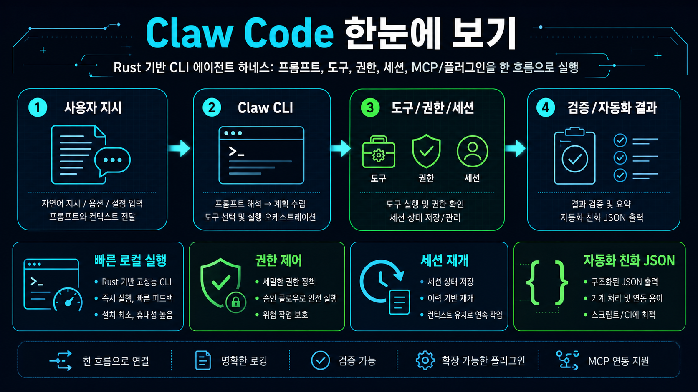

한 줄 결론: Rust로 만든 고속 CLI 에이전트 하네스로, 프롬프트 실행·도구 호출·권한 제어·세션 재개·MCP/플러그인·JSON 자동화 출력을 한 흐름으로 묶습니다.

기본 실행 표면은 rust/ 워크스페이스의 claw 바이너리입니다. 로컬 빌드 후 REPL 또는 원샷 프롬프트로 사용할 수 있습니다.
read-only, workspace-write, danger-full-access 등 권한 모드로 파일/셸 작업 범위를 통제합니다.
작업 맥락과 사용량/상태를 유지해 긴 작업을 이어갈 수 있으며, --resume 계열 흐름을 제공합니다.
Bash, 파일 읽기/쓰기/수정, grep/glob, WebFetch/WebSearch, Todo, Agent, NotebookEdit, Skill 등 에이전트 작업용 도구가 포함됩니다.
MCP 서버 수명주기, 플러그인 설치/활성화/비활성화, hook 표면을 실험할 수 있습니다.
doctor/status/init 등 주요 명령에 JSON 출력이 있어 CI, 스크립트, 외부 오케스트레이터와 연결하기 쉽습니다.
README가 명시하듯 이 저장소는 build-from-source 중심입니다. cargo install claw-code는 잘못된 deprecated stub이라고 경고합니다.
Anthropic API key 또는 bearer token, OpenAI-compatible provider 라우팅을 환경변수와 모델 prefix로 검증해야 합니다.
별·포크가 매우 많지만 이슈도 많고 릴리스가 비어 있습니다. 실제 도입 전 claw doctor, mock parity harness, 자체 샘플 작업 검증이 필요합니다.